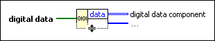

Get Digital Data Components Function
Owning Palette: Digital Waveform VIs and Functions
Requires: Base Development System
Returns the digital data components you specify. You specify components by clicking on the center of the output terminal and selecting either transitions or data.

 Add to the block diagram Add to the block diagram |
 Find on the palette Find on the palette |